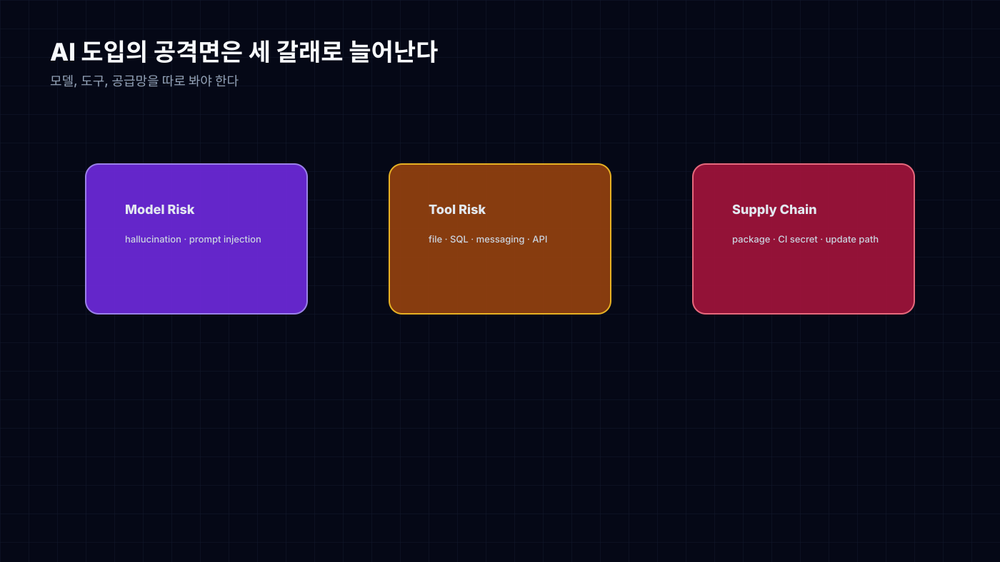
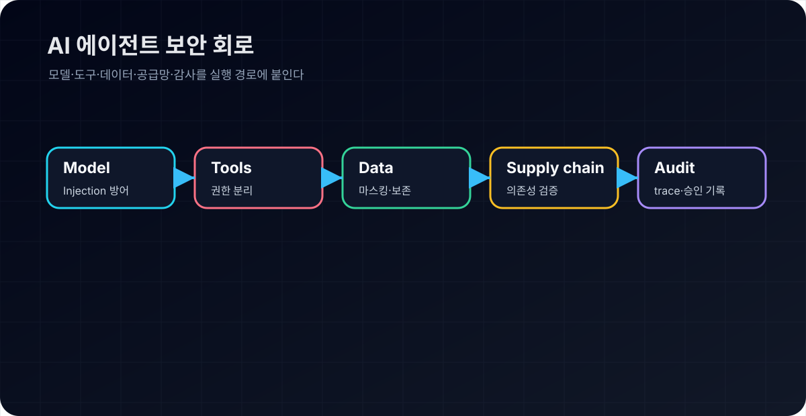
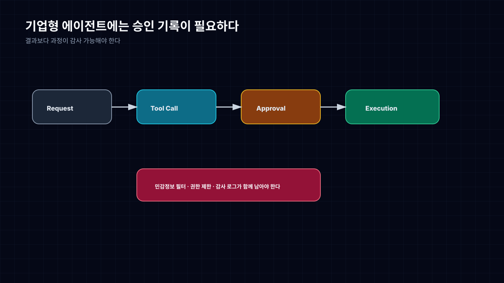

AI Agent가 도구를 쓰기 시작하면 보안은 어떻게 달라지나
AI가 답변만 할 때 보안은 비교적 단순했다. 이상한 답을 하면 사람이 무시하면 됐다.
에이전트가 도구를 쓰기 시작하면 이야기가 달라진다. 파일을 읽고, SQL을 실행하고, 메시지를 보내고, 외부 API를 호출한다. 이제 틀린 답변은 문장으로 끝나지 않는다. 실제 행동이 된다.
그래서 AI 보안을 “출시 전 체크리스트”로 보면 늦다. 안전은 에이전트가 움직이는 회로 안에 들어가야 한다. 권한, 승인, 로그, 민감정보 필터, 평가 데이터가 실행 경로에 붙어 있어야 한다.
공격면은 모델 하나가 아니다

AI 보안 리스크를 모델 환각으로만 보면 반쪽이다.
첫 번째는 모델 리스크다. prompt injection, hallucination, 과도한 확신, 근거 없는 판단이 여기에 들어간다.
두 번째는 도구 리스크다. 에이전트가 파일, SQL, 메시징, 결제, 배포 도구를 잡는 순간 권한 문제가 생긴다. 모델이 틀리면 도구가 틀린 행동을 한다.
세 번째는 공급망 리스크다. LiteLLM PyPI 공격 같은 사례는 AI 개발 도구 자체가 공격 경로가 될 수 있음을 보여준다. dependency pinning, lock file, CI/CD secret, package provenance는 AI 프로젝트에서도 평범하게 중요해졌다.
이 세 가지를 분리해서 봐야 한다. 모델만 안전하게 만들어도 도구 권한이 열려 있으면 위험하다. 도구 권한을 막아도 공급망이 뚫리면 소용없다.

운영 기준으로 바꾸면 보안 질문은 더 구체적이어야 한다.
| 리스크 | 점검 질문 | 기본 통제 |
|---|---|---|
| 모델 리스크 | prompt injection을 만났을 때 지시 우선순위를 지키는가? | system/developer instruction 분리, retrieval 문서 불신 처리 |
| 도구 리스크 | 읽기, 쓰기, 외부 전송 권한이 분리되어 있는가? | least privilege, 위험 tool call 승인 |
| 데이터 리스크 | 고객·업무 데이터가 prompt/log/vector store에 남는가? | 민감정보 마스킹, retention 정책 |
| 공급망 리스크 | AI SDK와 플러그인 의존성을 추적하는가? | lock file, provenance, CI secret scan |
| 감사 리스크 | 누가 어떤 행동을 승인했는지 남는가? | tool trace, approval record, incident log |
기업형 에이전트에는 승인 기록이 필요하다

기업에서 중요한 건 “AI가 좋은 결과를 냈다”가 아니다. 그 결과가 어떤 과정을 거쳐 나왔는지 설명할 수 있는가다.
외부 채널로 메시지를 보내기 전 사람이 승인했는가. 민감 데이터가 prompt나 log, vector store에 남지 않았는가. SQL과 파일 권한은 분리되어 있는가. tool call trace가 저장되는가. 실패와 거절 사례가 평가 데이터로 쌓이는가.
이 질문들은 귀찮은 문서 작업처럼 보이지만, 실제로는 제품을 계속 쓰게 해주는 조건이다. 로그가 없으면 감사할 수 없고, 권한이 없으면 통제할 수 없고, 평가 데이터가 없으면 개선할 수 없다.
EU AI Act 같은 규제 대응도 결국 여기로 온다. 정책 문서만으로는 부족하다. 실행 로그와 human-in-the-loop 기록이 있어야 한다.
실무 조직에서 먼저 막아야 할 구멍
실무 조직에서 agent를 Flow, 분석 파이프라인, 문서 처리, 고객-facing 업무에 붙인다면 최소 기준은 이렇다.
외부 전송은 기본적으로 승인 후 실행한다. Slack, Discord, 이메일, 고객 채널은 모두 action boundary다.
민감 데이터는 prompt, log, vector store에 남기 전에 필터링한다. 특히 고객 데이터와 내부 업무 데이터의 경계를 문서화해야 한다.
SQL, 파일, 메시징 tool 권한은 분리한다. “읽기만 가능”, “초안 작성 가능”, “실제 전송 가능”은 전혀 다른 권한이다.
실패와 거절 사례를 버리지 않는다. 이 데이터가 다음 eval set이 된다.
AI 보안은 “막는 일”만은 아니다. 제대로 설계하면 에이전트를 더 과감하게 쓸 수 있게 해준다. 어디까지 자동으로 보내도 되는지, 어디서 사람을 세워야 하는지 명확해지기 때문이다.
에이전트가 일을 하게 만들수록 안전은 더 제품 안쪽으로 들어와야 한다. 밖에서 검사하는 보안으로는 늦다. 실행 회로 안에 들어간 보안만 작동한다.
자주 묻는 질문
AI 에이전트 보안에서 가장 먼저 분리해야 할 권한은 무엇인가?
읽기, 쓰기, 외부 전송 권한을 먼저 분리해야 한다. 파일을 읽는 권한과 삭제하는 권한은 다르고, 메시지 초안을 작성하는 권한과 실제 고객 채널로 전송하는 권한도 다르다.
prompt injection은 왜 도구 권한 문제와 연결되는가?
prompt injection 자체는 잘못된 지시지만, 에이전트가 도구를 갖고 있으면 잘못된 지시가 파일 수정, SQL 실행, 외부 전송 같은 실제 행동으로 이어질 수 있다. 그래서 prompt 방어와 tool permission은 함께 설계해야 한다.
Sources
- Project Glasswing, AI cyber model, EU AI Act, LangChain evaluation/logging, OpenAI privacy filter 관련 공개 자료
- LiteLLM PyPI 공급망 공격 등 AI 개발 도구 생태계의 보안 사례
- 이 글은 공개 자료와 필자의 리서치 메모를 바탕으로 재구성했다.